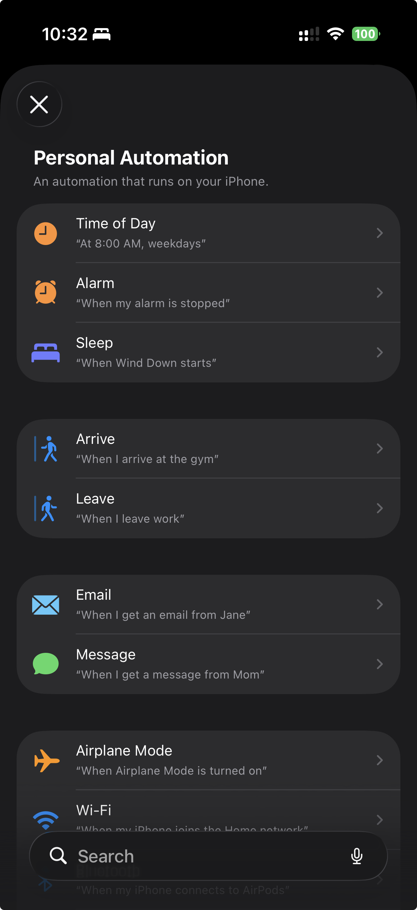
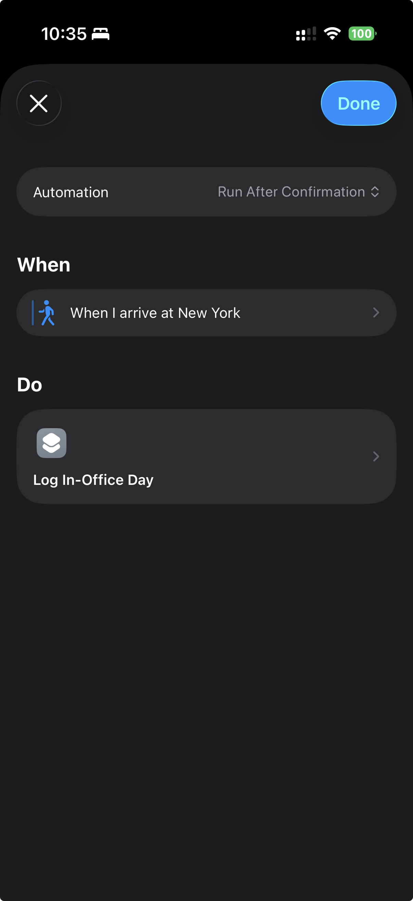

Answers to common questions about InDays. Can't find what you need? Email
in-days@saad.sh.
Getting started
What is InDays?
InDays helps hybrid workers keep track of the days they go into the office. Log days,
plan the ones ahead, review your history, set targets, and get gentle reminders, all in
one simple app.
Which devices does InDays work on?
InDays runs on iPhone and iPad. The companion Apple Watch app works with a Watch paired
to your iPhone, and widgets are available on the Home Screen and Lock Screen.
Do I need to create an account?
No. InDays works without an account, and your data stays on your device unless you
choose to sync it.
If you want your data on more than one device, you can sign in with Apple, Google, or
GitHub at any time.
Does the app need an internet connection?
No. Logging, planning, history, reminders, widgets, and the Watch app all work offline.
You only need a connection to sign in, sync, or load the latest prebuilt filters.
Logging & planning
How do I log an office day?
Open the Log tab. Today is selected by default, so just tap
Log today. To record a different office for that entry, tap
Change next to the office location first.
You can also log from a Home Screen widget, the Apple Watch app, Siri, or a Shortcuts
automation. These use your primary office if you've set one.
Can I log multiple days at once?
Yes. On the Log tab, tap Add day (or Add more) next to
Selected days and choose up to 14 days, then log them together. It's handy for
catching up on days you forgot. Days you've already logged are skipped.
Can I edit or delete a day I already logged?
Yes. Open History → Manage logged days, pick the entry, and change
its date or office, or delete it.
Can I plan days I haven't gone in yet?
Yes. On the Log tab, tap today or any future date on the calendar to plan it. To plan
against a target, tap a saved filter's progress card, or Plan days in
Saved filters, to open its planner. You can plan up to a year ahead.
Planning a day doesn't log it. A planned day shows as upcoming, becomes
kept once you log that date, and shows as missed if
the day passes without a log.
How do I remove a planned day?
Tap the planned day again on the calendar to unplan it. Unplanning never deletes a
logged entry.
Can I save more than one office?
Yes. Go to Profile → Locations to save up to five offices, and
mark one as your primary office.
What is the primary office used for?
Your primary office is attached automatically when you log, including from widgets, the
Apple Watch, Siri, and Shortcuts. In the app you can pick a different office for any
entry. If you haven't set a primary office, logs are saved without a location.
Reminders, widgets & automation
What are saved and prebuilt filters?
Saved filters are reusable date ranges, each with an optional target number of office
days. Create your own, or start from a prebuilt range and adjust it. InDays shows your
progress and tells you when you've hit the target.
You can keep up to 12 saved filters, pin up to three for widgets, and open any of them
in the planner to place the days you still need.
Can I set up reminders?
Yes. Go to Profile → Reminders, turn on the end-of-day prompt, and
choose the time and the weekdays you want it.
Each reminder has a Log today action, so you can record the day
straight from the notification. Reminders are scheduled on your device and need
notification permission the first time you turn them on.
Do planned days get their own reminders?
Yes. With reminders on, InDays nudges you the evening before a day you planned, then
asks again that evening if the day still isn't logged. The evening-before nudge has no
log button, because you can't log a day before it happens.
Are there Home Screen and Lock Screen widgets?
Yes. Pin up to three saved filters from Saved filters and they appear
in the widgets. The first pinned filter is the one shown on the Lock Screen. Home Screen
widgets show your progress and can log today without opening the app.
Does InDays have an Apple Watch app?
Yes. The Watch app shows whether you've logged today, your primary office, and how many
days you've been in this week. Tap Log today to record the day from
your wrist.
It stays in sync with your iPhone automatically. There's nothing to set up beyond
installing it.
Can I use Siri?
Yes. Say “Log in office day in InDays” or run the
Log In-Office shortcut. Your primary office is used automatically if
you've set one.
Can I automate logging with Shortcuts?
Yes. In the Shortcuts app, create a Personal Automation and add InDays'
Log In-Office Day action. Run it when you arrive at the office, when
you leave, or at whatever time suits your routine.
InDays doesn't ask for location permission. Arrival and departure triggers are handled
entirely by Apple's Shortcuts app.


A Shortcuts automation can run on arrival, departure, a time of day, and many other
triggers.
Where can I see what's new?
InDays shows a What's New sheet the first time you open the app after an update with
something worth calling out. You can open it again anytime from
Profile → What's New.
Account, sync & data
Which sign-in methods are available?
Apple, Google, and GitHub. Signing in is optional; skip it and InDays keeps everything
on your device.
How does syncing work?
When you're signed in, your logs, planned days, office locations, and saved filters sync
so they appear on your other devices. Changes sync automatically whenever you're online,
and you can pull to refresh to sync right away.
When you sign out, InDays clears synced account data from the device once syncing
finishes. If some changes haven't synced yet, it keeps them on the device so they can
upload the next time you sign in.
What if a sync fails?
Your changes stay saved on the device. Profile shows a
Cloud sync failed notice; once you're back online, tap
Retry. Wait for a successful sync before expecting the changes on
another device.
What data does the app collect?
Only what you enter and what the app needs to run: your logs, planned days, office
locations, profile details, saved filters, reminder settings, and basic account details
if you sign in. There are no ads, analytics, or tracking. See the
Privacy Policy for details.
How do I delete my data or account?
You can delete individual entries from
History → Manage logged days. To delete your account and all
synced data, open Profile → Account and tap
Delete account. This removes your cloud data, clears local data on the
device, and signs you out.
If you signed in with Apple, you'll be asked to confirm with Apple once more so InDays
can revoke its sign-in token. If that step fails, your account isn't deleted yet, so try
again.
Using the app without an account? Clear everything from
History → Quick actions → Data management → Wipe All Data.
Still need help?
Email us at
in-days@saad.sh
and we'll get back to you as soon as possible.